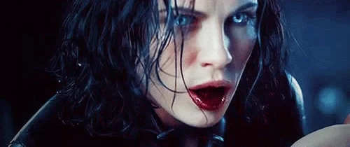

A vampire is a creature from folklore that subsists by feeding on the vital essence (generally in the form of blood) of the living. In European folklore, vampires are undead creatures that often visited loved ones and caused mischief or deaths in the neighborhoods they inhabited while they were alive. They wore shrouds and were often described as bloated and of ruddy or dark countenance, markedly different from today's gaunt, pale vampire which dates from the early 19th century.
